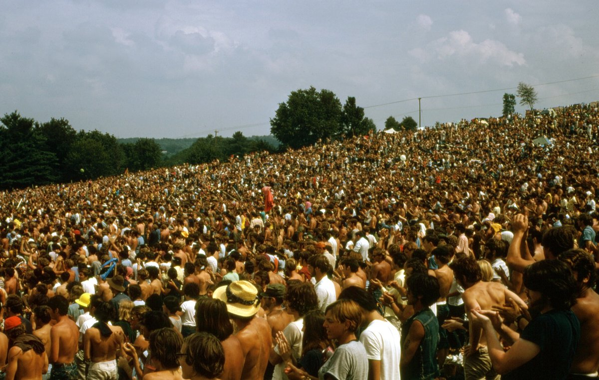

1969 music crowned the Archies' Sugar, Sugar as the year's biggest single.
The cartoon group's hit spent four weeks at number one on the Billboard Hot 100.
Seventeen different songs reached the top that year, and the 5th Dimension held it for nine weeks.
Listen to 1969 Music
25 of 1969's biggest hits are playable below, from Billboard's year-end top 100 for 1969.
Press play on any row, or use Play All to run the whole list.
| # | Title | Artist | Chart Peak | Genre |
|---|---|---|---|---|
| Sugar, Sugar | The Archies | No. 1, 4 wks | Pop & Brill Building | |
| Aquarius/Let the Sunshine In | The 5th Dimension | No. 1, 6 wks | Pop & Brill Building | |
| I Can't Get Next to You | The Temptations | No. 1, 2 wks | Motown, Soul & R&B | |
| Honky Tonk Women | The Rolling Stones | No. 1, 4 wks | British Invasion | |
| Everyday People | Sly and the Family Stone | No. 1, 4 wks | Motown, Soul & R&B | |
| Dizzy | Tommy Roe | No. 1, 4 wks | Pop & Brill Building | |
| Hot Fun in the Summertime | Sly and the Family Stone | No. 2 | Motown, Soul & R&B | |
| I'll Never Fall in Love Again | Tom Jones | No. 6 | Jazz & Easy Listening | |
| Build Me Up Buttercup | The Foundations | No. 3 | Motown, Soul & R&B | |
| Crimson and Clover | Tommy James and the Shondells | No. 1, 2 wks | Pop & Brill Building | |
| One | Three Dog Night | No. 5 | Pop & Brill Building | |
| Crystal Blue Persuasion | Tommy James and the Shondells | No. 2 | Pop & Brill Building | |
| Hair | The Cowsills | No. 2 | Pop & Brill Building | |
| Too Busy Thinking About My Baby | Marvin Gaye | No. 4 | Motown, Soul & R&B | |
| Love Theme from Romeo and Juliet | Henry Mancini | No. 1, 2 wks | Jazz & Easy Listening | |
| Get Together | The Youngbloods | No. 5 | Folk Rock | |
| Grazing in the Grass | The Friends of Distinction | No. 3 | Motown, Soul & R&B | |
| Suspicious Minds | Elvis Presley | No. 1, 1 wk | Pop & Brill Building | |
| Proud Mary | Creedence Clearwater Revival | No. 2 | Garage & Surf Rock | |
| What Does It Take (To Win Your Love) | Jr. Walker & The All Stars | No. 4 | Motown, Soul & R&B | |
| It's Your Thing | The Isley Brothers | No. 2 | Motown, Soul & R&B | |
| Sweet Caroline | Neil Diamond | No. 4 | Pop & Brill Building | |
| Jean | Oliver | No. 2 | Pop & Brill Building | |
| Bad Moon Rising | Creedence Clearwater Revival | No. 2 | Garage & Surf Rock | |
| Get Back | The Beatles with Billy Preston | No. 1, 5 wks | British Invasion |

Table of Contents
- Listen to 1969 Music
- 1969 Music's Billboard Hot 100 Number Ones
- Key Albums Released in 1969
- Notable Events in 1969
- Genre Shifts in 1969 Music
- Play 1969 on the Radio Dial
- FAQ
1969 Music's Billboard Hot 100 Number Ones
Seventeen different songs reached the top of the Billboard Hot 100 in 1969.
The 5th Dimension led the year with nine weeks at number one across two songs.
The Beatles and Zager and Evans each added six weeks.
| Title | Artist | Chart | Reached No. 1 | Weeks at #1 in 1969 |
|---|---|---|---|---|
| I Heard It Through the Grapevine | Marvin Gaye | Billboard Hot 100 | Jan 4, 1969 | 4 (7 in all) |
| Crimson and Clover | Tommy James and the Shondells | Billboard Hot 100 | Feb 1, 1969 | 2 |
| Everyday People | Sly & the Family Stone | Billboard Hot 100 | Feb 15, 1969 | 4 |
| Dizzy | Tommy Roe | Billboard Hot 100 | Mar 15, 1969 | 4 |
| Aquarius/Let the Sunshine In | The 5th Dimension | Billboard Hot 100 | Apr 12, 1969 | 6 |
| Get Back | The Beatles with Billy Preston | Billboard Hot 100 | May 24, 1969 | 5 |
| Love Theme from Romeo and Juliet | Henry Mancini | Billboard Hot 100 | Jun 28, 1969 | 2 |
| In the Year 2525 | Zager and Evans | Billboard Hot 100 | Jul 12, 1969 | 6 |
| Honky Tonk Women | The Rolling Stones | Billboard Hot 100 | Aug 23, 1969 | 4 |
| Sugar, Sugar | The Archies | Billboard Hot 100 | Sep 20, 1969 | 4 |
| I Can't Get Next to You | The Temptations | Billboard Hot 100 | Oct 18, 1969 | 2 |
| Suspicious Minds | Elvis Presley | Billboard Hot 100 | Nov 1, 1969 | 1 |
| Wedding Bell Blues | The 5th Dimension | Billboard Hot 100 | Nov 8, 1969 | 3 |
| Come Together / Something | The Beatles | Billboard Hot 100 | Nov 29, 1969 | 1 |
| Na Na Hey Hey Kiss Him Goodbye | Steam | Billboard Hot 100 | Dec 6, 1969 | 2 |
| Leaving on a Jet Plane | Peter, Paul and Mary | Billboard Hot 100 | Dec 20, 1969 | 1 |
| Someday We'll Be Together | Diana Ross & the Supremes | Billboard Hot 100 | Dec 27, 1969 | 1 |
The Year-End Number One
The Archies' Sugar, Sugar reached number one on September 20 and stayed for four weeks.
It also tops Billboard's year-end Hot 100 for 1969.
The 5th Dimension's Aquarius/Let the Sunshine In ranks second and the Temptations' I Can't Get Next to You third.
A Big Year for Medleys and Double Sides
Aquarius/Let the Sunshine In spent six weeks at number one from April 12.
The Beatles' Come Together and Something shared the top spot on November 29.
Zager and Evans' In the Year 2525 also held number one for six weeks.
How the Year Ended
Steam's Na Na Hey Hey Kiss Him Goodbye took the top on December 6 for two weeks.
Peter, Paul and Mary's Leaving on a Jet Plane followed on December 20.
Diana Ross and the Supremes closed 1969 with Someday We'll Be Together on December 27.
Key Albums Released in 1969
Six albums stand out from 1969.
- Led Zeppelin, Led Zeppelin (released in the US on January 12, 1969).
- Nashville Skyline, Bob Dylan (released April 9, 1969).
- Tommy, The Who (released May 23, 1969).
- Abbey Road, The Beatles (released in the UK on September 26, 1969, and in the US on October 1).
- In the Court of the Crimson King, King Crimson (released in the UK on October 10, 1969).
- Let It Bleed, The Rolling Stones (released in the US on November 28, 1969, and in the UK on December 5).
Notable Events in 1969
- Brian Jones of the Rolling Stones was found dead at his home in Sussex on July 3.
- The Woodstock festival opened on August 15 at Max Yasgur's dairy farm in Bethel, New York.
- The Plastic Ono Band made their live debut in Toronto on September 13. Read more on September 13
- Joni Mitchell sang Woodstock in public for the first time on September 14. Read more on September 14
- Abbey Road reached US shelves on October 1. Read more on October 1
- Creedence Clearwater Revival's Green River reached number one on the Billboard 200 on October 4. Read more on October 4
- The Jackson 5 released their debut single, I Want You Back, on October 7. Read more on October 7
- The "Paul is dead" rumor started on a Detroit radio call on October 12. Read more on October 12
Genre Shifts in 1969 Music
1969 music was the year bubblegum pop and soul shared the top of the chart.
By this site's genre tags, ten of the year-end top 25 were pop and Brill Building songs, including Sugar, Sugar, Dizzy and Sweet Caroline.
Motown, soul and R&B supplied eight, from I Can't Get Next to You to It's Your Thing.
Jazz and easy listening added two, Tom Jones and Henry Mancini.
The British Invasion sent Honky Tonk Women and Get Back, and one folk rock song made the cut.
Soul and Funk Rule the Radio
Sly and the Family Stone's Everyday People went to number one on February 15 and ranks fifth.
Their Hot Fun in the Summertime peaked at number two and ranks seventh.
The Friends of Distinction turned Hugh Masekela's Grazing in the Grass into a vocal hit that ranks 17th.
Guitar Rock Holds the Top Ten
The Rolling Stones' Honky Tonk Women reached number one on August 23 and ranks fourth for the year.
The Beatles' Get Back, credited to the Beatles with Billy Preston, ran five weeks from May 24.
Creedence Clearwater Revival put Proud Mary and Bad Moon Rising at number two, and both land in the garage and surf rock tag here.
Folk Roots and Country Sounds
The Youngbloods' Get Together peaked at number five and ranks 16th.
Bob Dylan's Nashville Skyline arrived on April 9, a folk-rooted album in country style.
Play 1969 on the Radio Dial
The site's own Play 1969 on the Radio Dial tunes every station to songs from this year alone.
FAQ
What was the number one song of 1969?
The Archies' Sugar, Sugar is the number one song of 1969 on Billboard's year-end Hot 100.
It reached number one on September 20, 1969, and held the top spot for four weeks.
How many songs hit number one in 1969?
Seventeen different songs reached number one on the Billboard Hot 100 in 1969.
The year opened with Marvin Gaye's I Heard It Through the Grapevine and closed with Diana Ross and the Supremes' Someday We'll Be Together.
Who had the most weeks at number one in 1969?
The 5th Dimension had the most weeks at number one in 1969, with nine.
Aquarius/Let the Sunshine In held the top for six weeks and Wedding Bell Blues added three more in November.
Which songs spent the longest at number one in 1969?
Aquarius/Let the Sunshine In by the 5th Dimension and In the Year 2525 by Zager and Evans each spent six weeks at number one.
The 5th Dimension's run started April 12, and Zager and Evans took over on July 12.
What kind of music was popular in 1969?
1969 music mixed bubblegum pop, soul and funk, film themes and guitar rock.
The Archies, Sly and the Family Stone, Henry Mancini, the Rolling Stones and Creedence Clearwater Revival all had year-end top 25 hits.
1969 turned into the year the Hot 100 went cartoon, soulful and festival-sized all at once.
Compare it with the chart quirks of 1968 music.
Hear more of the decade in the best 60s songs list.
Explore the rest of the decade on the 1960smusic.net homepage.